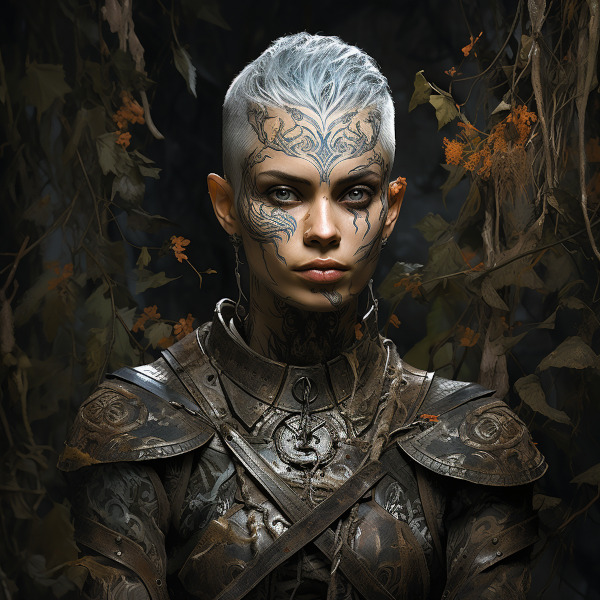
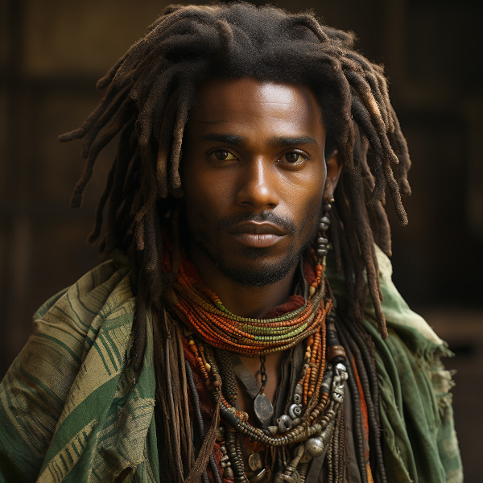
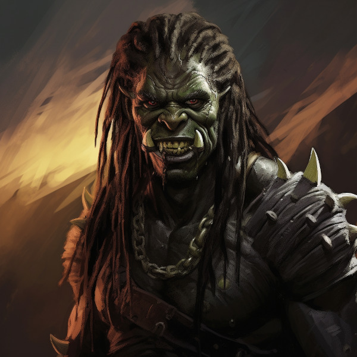

Races
Primary Races
The races within Naurrnen are fairly equal. Although Elves are known for their skills in magic, music, and crafting instruments and enchanted items, that does not mean one will find elves doing hard labor, exercising what strength they have. Orcs are generally favored for that sort of labor, as they tend to be more physically suited for the task. But not every Orc is physically built for this task, as not every Elf is well suited to the arts. Their are Orcs who take an interest in magic or music, as well. They are generally not as well suited as the Elves, but that is not to say, their are not Orcs that have better ears, or eyes than many Elves, or better minds for magic. These exceptions are generally blamed on half-breeds. Half-breeding has become so common in the age of man, no one really knows for sure who is a half-breed, or if one, who might think themselves as a pure-bred, is really a fourth or fifth generation mixed breed. What separates the races more than anything are their cultural identities.
Anashim or Elf

Figure 1: Hallishim man at arms
- Language
Anashim language has several dialects. The most common being that of the Hallashim.
- Anashim Sub-races
- High Anashim: Hallashim
- Wood Anashim: Taurashim
- Dark Anashim: Durashim
- Cavern Anashim: Gathashim
- Strengths
- Magic
- Art
- Architecture
- Music
- Crafts
- Magical items
- Musical instruments

Figure 2: Taurashim Ranger
- Pantheon
Anor Highest father of vengeance. Ithil Highest mother of justice. The great protector. Gladys Goddess of nature. Gurth God of the underworld. Friend of the dead. Nostia Goddess of fertility.
Adama or Man

Figure 3: Edama merchant
- Language
Men’s language had been historically Hallashim, as man had been the slaves of certain High Elf empires. But they did have a language of their own that differentiated them from their captors. That slave language evolved into a full-blown Adaman language or language of man. That language became known by the early third era as Malairt or “trade” language.
- Sub-races
- Dark man: Durama
- Red man: Edama
- Pale man: Palama
- Strengths
- Multi-purpose
- Rational

Figure 4: Durama scout
- Pantheon
Dagda Highest father vengeance and justice. Morrigaan Highest mother, nuture and nature. Orown God of the underworld. Brigid Goddess of art, beauty, and fertility. Bres Man king who was exalted to the pantheon.
Orpa

Figure 5: Orc chieftan
Known in elvish as Osunus, and to the humans as Orcs.
Secondary Races
Mochveneba

Figure 6: Mochveneba warrior
Mochveneba or “ghost people” are a minority ethnicity within Naurrnen. They are elf-like, in that they share many of the features that elven folk have, but they are well known for their physical prowness. Their skin is a deep red, with stripes. Similar to tiger stripes. In fact, legend outside the Mochveneba tribes, say they are crossbred elves with tigers. In reality, they are more than likely half-breeds. More than likely, half-elf, and half-something else. They have unusual stamina, so some speculate half-orc, though their uncommon beauty seems to indicate otherwise.
The Mochveneba tribes are religious, and perhaps to most of the civilized world, somewhat superstitious. Mochveneba are spiritual and do not generally pursue material wealth. Those that do, are coveted for their beauty and brute strength.
- Strengths
- Enchanting weapons and items.
- Known for physical strength.
- Warlike, but peace-loving.
- Pantheon
- Animism: They believe spirit is in all things. But they also believe that consciousness is a higher form of spirit.
- Believe in balance betweem “pah” and “foh”. Good/Evil. Hot/Cold, etc.
- Believe their ancestors live beyond the vale, and they will one day join them in death.
- Presence, meditation, seeking inner peace and clarity is essential. Past and future, do not matter. Only the present.
- Cycle of life: spirit lives and dies, and is renewed again. Consciousness, on the other hand, goes to the ancestral grove, the spirit world, after death, and does not return.
Languages
Adaman, the trade tongue
Adaman is the (almost) universal tongue of Naurrnen. It is used amongst merchants, and mostly widely spoken in everyday communication within the Gran Imperio.
Hallashim, language of the Elves